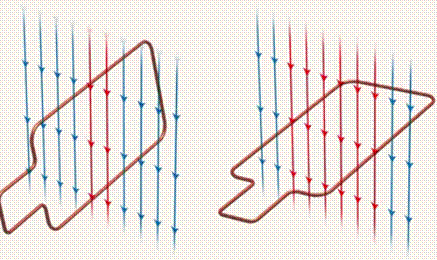

На этом уроке мы рассмотрим явление, которое лежит в основе всей современной цивилизации. Без явления электромагнитной индукции не может существовать и процветать ни одно государство. Даже личный комфорт каждого из нас напрямую связан с использованием этого явления. Оно используется для получения электроэнергии на электростанциях.
В 1820 году датский ученый Эрстед обнаружил влияние проводника с током на магнитную стрелку (см. Рис. 1). Ученые предположили, что если электрический ток порождает вокруг себя магнитное поле, то может существовать и обратное явление. То есть что магнитное поле может стать причиной появления электрического тока.
Рис.1. Опыт Эрстеда
29 августа 1831 года английский ученый М. Фарадей в своей лаборатории собрал установку, упрощенная модель которой изображена на рисунке 2.
Рис. 2. Схема экспериментальной установки Фарадея
Рассмотрим опыт с полосовым магнитом и катушкой, замкнутой на амперметр. Если подносить магнит к катушке таким образом, чтобы он двигался перпендикулярно плоскости витков, то в катушке появится электрический ток, о чем свидетельствует отклонение стрелки амперметра (см. Рис. 4 (1)). То же самое будет наблюдаться, если выдвигать магнит из катушки, только стрелка отклоняется в другую сторону (см. Рис. 4 (3)). Если магнит покоится, ток не появляется (см. Рис. 4 (2)).
Рис. 4. Появление тока при движении магнита
Исследуем наблюдаемое явление.
Мы установили, что изменение во времени магнитного поля вокруг катушки из проводника порождает в этой катушке электрический ток. Магнитное поле мы представляем в виде воображаемых магнитных линий. Для постоянного магнита эти линии идут от северного полюса к южному (см. Рис. 5). Вектор магнитной индукции в каждой точке магнитной линии направлен по касательной к этой линии.
Рис. 5. Направление магнитных линий и вектора магнитной индукции
Если приближать магнит к катушке, то число линий, которые пронизывают плоскость этой катушки, увеличивается. Если держать магнит неподвижным, то число линий, пронизывающих катушку, остается неизменным. Если удалять магнит от катушки, то число линий, пронизывающих катушку уменьшается (см. Рис. 6).
Рис. 6. Изменение числа магнитных линий, пронизывающих катушку
Чем больше линий магнитного поля пронизывают площадку, тем выше значение модуля магнитной индукции (см. Рис. 7).
Рис. 7. Изменение модуля магнитной индукции в зависимости от количества линий магнитного поля
Число линий магнитного поля, которые пронизывают некоторую площадку, зависит также от того, как ориентирована данная площадка по отношению к вектору магнитной индукции (см. Рис. 8).

Рис. 8. Количество магнитных линий зависит от положения площадки
Как известно из геометрии, ориентацию площадки в пространстве задает единичный вектор нормали () к этой площадке. Таким образом, число линий, которые проходят через площадку, помещенную в магнитное поле, зависит (см. Рис. 9):
Тригонометрическая функция, которая удовлетворяет таким условиям, – это косинус. Следовательно, магнитный поток – это величина, равная произведению модуля магнитной индукции на площадь поверхности, пронизываемой линиями магнитного поля, умноженному на косинус угла между вектором магнитной индукции и нормалью к этой поверхности.
Рис. 9. Число магнитных линий, пронизывающих площадку
Электромагнитная индукция – явление возникновения электрического тока в контуре или в катушке при изменении магнитного потока, пронизывающего этот контур или катушку.